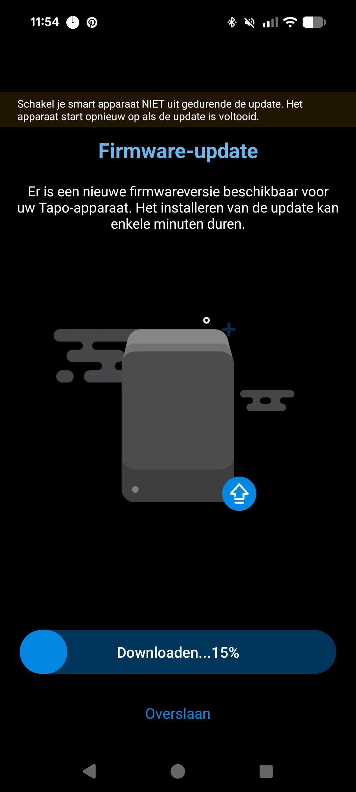
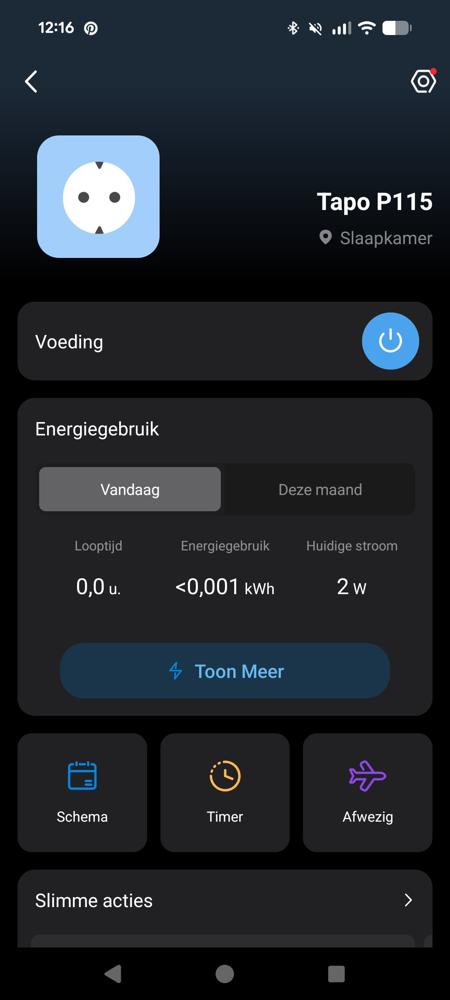
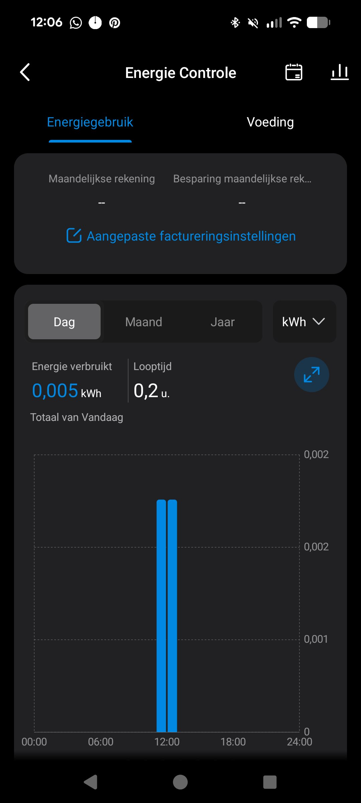
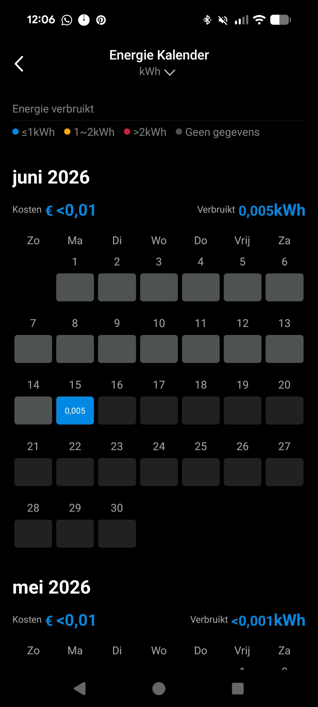
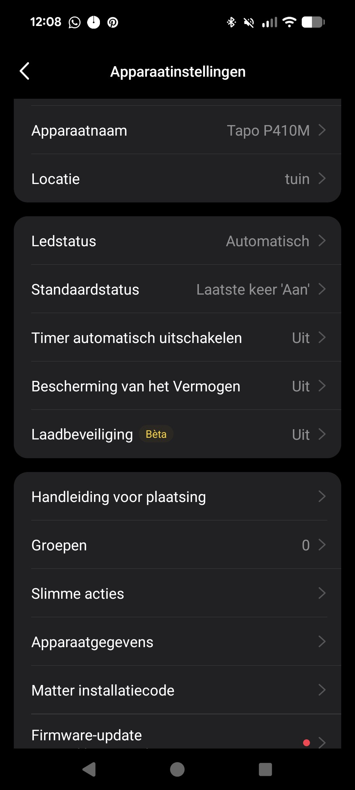

In dit artikel
Twee weken. De P115 zit in mijn tv-kast. De P410M hangt buiten. Elke dag gebruik ik ze, kijk ik in de app en trek ik conclusies. Dit is wat ik na twee weken eerlijk kan zeggen — geen productomschrijving herhalen, maar gewoon: werkt het, en voor wie?
1. Setup: hoe snel ben je aan de slag?

De P115 is binnen twee minuten klaar. App downloaden, stekker inpluggen, netwerk selecteren, klaar. Geen hub, geen extra hardware. Enige vereiste: 2,4GHz wifi. Heb je alleen een 5GHz netwerk? Dan werkt het niet direct — de meeste routers zenden beide tegelijk uit, maar check dit even.
De P410M setup duurt iets langer omdat je een keuze moet maken: koppelen via de Tapo-app (gewoon WiFi) of via Matter (voor Apple Home, Google Home, of Home Assistant). Voor Matter scan je de QR-code op het kaartje dat in de doos zit. Doe dit direct bij setup — achteraf is het meer werk. Bewaar het Matter-kaartje goed — zonder die code is opnieuw koppelen via Matter een stuk lastiger.
2. Tapo P115 in dagelijks gebruik

Ik heb hem op mijn tv-kast gezet. Receiver, versterker, alles op standby. De app liet binnen een dag zien dat de kast 24 uur per dag gemiddeld 18 watt trekt — ook als ik niets kijk. Op jaarbasis is dat bijna €43 aan sluipverbruik. Een schema ingesteld: alles uit na middernacht, aan om 17:00. Dat was het.
De stekker valt letterlijk niet op in het stopcontact. Hij blokkeert het stopcontact ernaast niet. Na de eerste dag vergeet je dat hij er zit — en dat is precies de bedoeling.
Wat de P115 niet heeft vergeleken met de P115M
De P115 heeft geen zero-crossing detection. Dat is een feature die alleen in de M-modellen zit (P115M, P110M, P410M). Voor apparaten die veel stroom trekken — kachels, tosti-ijzers — betekent dat op den duur meer slijtage op het relais. Voor een tv-kast of oplader merk je er niets van. Maar wil je een zware belasting vaak schakelen, dan is de P115M of P410M de betere keuze.
Ook geen Matter. De P115 werkt via WiFi en de Tapo-app, plus Alexa en Google. Apple Home? Niet mogelijk zonder omwegen. Als dat belangrijk is: P115M.
Werkt prima voor
- Sluipverbruik meten en aanpakken
- Schemabesturing van apparaten
- Home Assistant (via TP-Link integratie)
- Beginners zonder smarthome-ecosysteem
Minder geschikt voor
- Zware apparaten die vaak schakelen
- Apple Home gebruikers
- Mensen die buiten iets willen aansturen
- Volledig Matter-ecosysteem
3. De Tapo-app: beter dan verwacht

Dit is waar ik positief verrast was. Ik verwachtte een basisapp met een aan/uit-knop en een simpele grafiek. Wat je krijgt is een volwaardig energie-dashboard.
Grafieken per uur, dag, maand en jaar
Je ziet verbruik per 5 minuten (laatste 24 uur), per uur (laatste 7 dagen), per dag (laatste 3 maanden) en per maand (laatste jaar). Dat is meer historische data dan de meeste concurrenten bieden.
Energiekalender met kleurcodering
Een kalenderweergave over de afgelopen 3 maanden. Blauw = laag verbruik, oranje = gemiddeld, rood = hoog. In één oogopslag zie je op welke dagen een apparaat meer trok dan normaal.
Bill calculator met eigen tarief — ook piek/dal
Je stelt je eigen stroomtarief in, inclusief piek- en daltarieven. Heb je een dynamisch contract? Dan zie je een schatting van wat een apparaat je over de afgelopen maand heeft gekost op basis van jouw tarief. Dat is een feature die ik bij weinig concurrenten zie.
Overbelastingsmelding
Stel een wattage-drempel in. Gaat een apparaat daarboven, dan krijg je een notificatie en schakelt de stekker automatisch uit. Handig als veiligheidsmaatregel bij oudere apparatuur.
4. Tapo P410M buiten: wat merk je ervan?
De P410M hangt buiten bij mijn tuinverlichting. Na twee weken — inclusief een flinke regenbui — geen enkel probleem. De klep sluit goed af, de verbinding viel geen moment weg. IP54 doet wat het belooft.
Wat opvalt: de P410M heeft zero-crossing detection, in tegenstelling tot de P115. Praktisch gezien betekent dat: hij schakelt altijd op het nulpunt van de wisselstroom. Geen vonk, geen slijtage. Voor tuinverlichting die elke dag meerdere keren schakelt, is dat op termijn dat op termijn slijtage aan het relais vermindert, zeker bij apparaten die vaak schakelen.
Dat betekent concreet: minder kans op vastlassen van het relais bij apparaten die dagelijks meerdere keren schakelen. Op termijn merk je dat in de levensduur van de stekker.
Bidirectionele meting: handig voor zonnepanelen
De P410M heeft goede energiemeting. Sluit je er een balkonzonnepaneel of micro-omvormer op aan, dan zie je in de app duidelijk hoeveel stroom er verbruikt wordt. De app geeft daarnaast inzicht in wanneer je zonnepanelen terugverdiend zijn op basis van de gemeten data. Dat is een handige extra die je bij de meeste gewone slimme stekkers niet vindt.

Werkt prima voor
- Tuinverlichting en vijverpomp
- Balkonzonnepanelen meten
- Apple Home en Google Home (Matter)
- Home Assistant lokaal via Matter
- Alles wat buiten moet blijven hangen
Minder geschikt voor
- Mensen die alleen binnen iets willen
- Wie €10 wil besparen (neem dan P115)
- Volledig offline gebruik zonder setup
5. Home Assistant koppeling

Tapo heeft twee manieren om in Home Assistant te landen: via de officiële TP-Link Tapo-integratie (voor de P115 en P410M), of voor de P410M via Matter. Beide werken lokaal na de initiële koppeling.
P115 in Home Assistant
Via de officiële TP-Link Tapo-integratie in Home Assistant (te vinden onder Instellingen → Apparaten & Diensten) koppel je de P115 lokaal. Je hebt bij de eerste setup je TP-Link-accountgegevens nodig. Daarna werkt alles lokaal: aan/uit, energiemeting, wattage — allemaal als losse entities in HA. De integratie is stabiel en werkt zonder cloud na de eerste koppeling.
P410M in Home Assistant via Matter
Dit is de schonere optie. De P410M is Matter 1.3-gecertificeerd. In Home Assistant voeg je hem toe via de Matter-integratie (QR-code scannen). Na koppeling werkt hij lokaal — geen TP-Link account nodig. Schakelen werkt probleemloos. Energiemeting via Matter kan per platform verschillen; via de TP-Link Tapo-integratie krijg je de meest volledige sensor-data. Wil je helemaal offline? Blokkeer het apparaat in je router na de initiële setup.
6. Eindoordeel
De P115 is de stekker die je koopt als je wil beginnen met energiemeten zonder er veel over na te denken. Goedkoop, compact, stabiel. De app is beter dan je verwacht. Het ontbreken van Matter is een bewuste keuze van Tapo — die versie heet P115M en kost iets meer.
De P410M verraste me het meest. De bouwkwaliteit is een klasse hoger dan ik verwachtte voor deze prijs. Zero-crossing, bidirectionele meting, Matter 1.3, IP54 — dat is een stevige lijst voor een buitenstekker van rond de 28 euro. Als je buiten iets slim wil aansturen en niet wil twijfelen over kwaliteit: dit is de stekker.
Veelgestelde vragen
Werkt de Tapo P115 met Home Assistant? +
Ja. Via de TP-Link Tapo-integratie in Home Assistant werkt de P115 lokaal, inclusief energiemeting. Bij de eerste koppeling heb je een TP-Link-account nodig, daarna draait alles lokaal.
Werkt de Tapo P410M met Apple Home? +
Ja. De P410M is Matter 1.3-gecertificeerd en werkt volledig met Apple Home, Google Home, Alexa en SmartThings. Na koppeling werkt hij lokaal zonder cloud.
Kan ik de Tapo P115 gebruiken met een dynamisch energiecontract? +
Ja. De Tapo-app heeft een bill calculator waarbij je piek- en daltarieven instelt. Je kunt schema’s maken zodat apparaten automatisch schakelen op de goedkoopste uren. Combineer dat met een dynamisch contract voor maximale besparing.
Slimme stekker + dynamisch contract = maximaal besparen
Energiemeting via de Tapo-app werkt het beste als je een contract hebt met piek- en daltarieven. Vergelijk energieleveranciers en kies wat bij jou past.
Vergelijk energiecontracten →